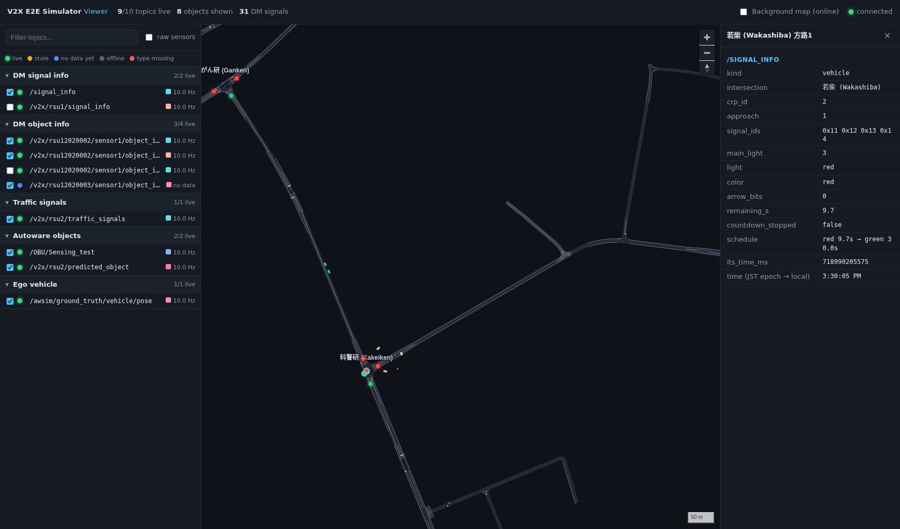
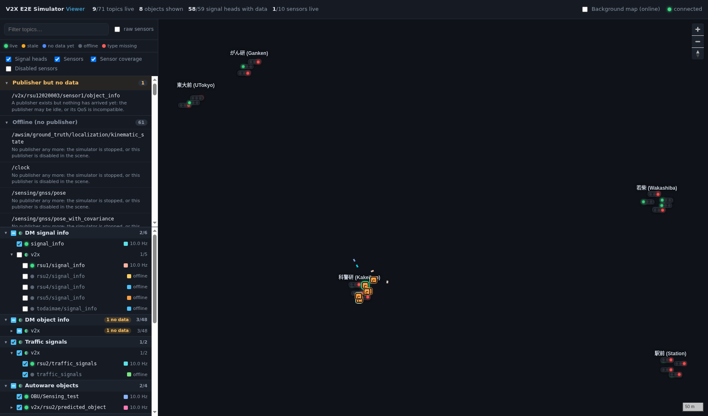
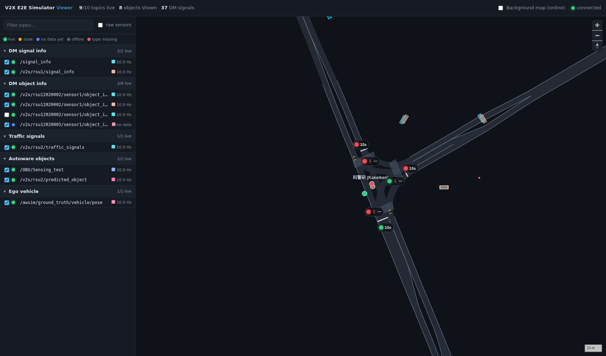
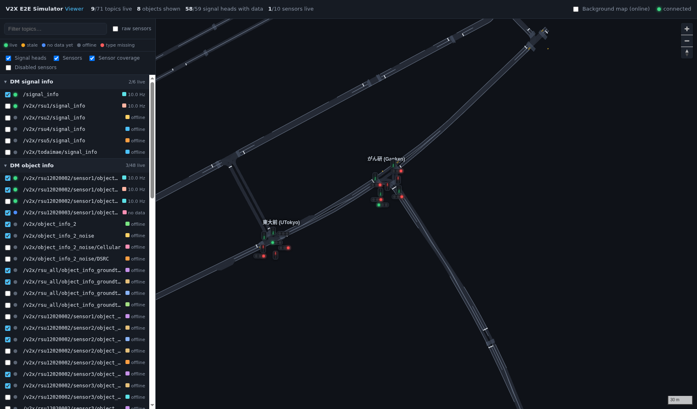

Web Viewer
The web viewer is a local web page that answers two questions while the simulator runs:
- Which topics are live? Every topic the simulator publishes is listed with its status, rate and last-message age.
- What do they say? Everything except raw sensor data is drawn on the Kashiwa Lanelet2 map: DM object info, DM signal info with remaining time, V2X and Autoware traffic signals, Autoware objects and the ego vehicle.
It lives in tools/web-viewer/ and runs on the simulator machine only.

Start
cd V2X_E2E_Simulator
tools/web-viewer/run.sh
Then open http://localhost:8080. Start the simulator before or after; the viewer picks up topics as they appear.
run.sh does the setup:
- sources ROS 2 Humble and the v2x_e2e_msgs workspace, which it expects at
../v2x_e2e_msgs/installnext to the simulator folder. Override this withMSGS_SETUP=/path/to/install/setup.bash. - uses the simulator's middleware settings:
RMW_IMPLEMENTATION=rmw_cyclonedds_cppandROS_LOCALHOST_ONLY=1. - on the first run, creates
tools/web-viewer/.venvwithaiohttp, leaving the system Python untouched.
Options: --port 9000 changes the port. The server binds to 127.0.0.1, so the page cannot be opened from another computer.
How it works
Simulator ──ROS 2──► server/main.py (one Python process, rclpy + aiohttp)
├─ monitor.py discovers topics every second, subscribes to each non-raw topic,
│ measures rate / last-message age, keeps the latest message
├─ decoders.py turns the latest messages into map features (≤ 10 Hz),
│ only for the topics ticked in the page
└─ WebSocket /ws ──► browser: topic list (1 Hz) + map layers (≤ 10 Hz)
No Foxglove, rosbridge or other ROS packages are needed. The server subscribes with best effort QoS, which matches both reliable and best-effort publishers. Raw sensor types (PointCloud2, Image, CameraInfo, LaserScan, Imu, NavSatFix, …) are listed but never subscribed to.
Topic panel
Problems
Every topic with an issue is listed at the top of the sidebar, grouped by reason. Each group has a short explanation, and each topic its details. Click a topic to open it in the inspector.
| Group | Meaning | What to check |
|---|---|---|
| 🔴 Message type missing | The type is not in the sourced message workspace, so the topic cannot be received or decoded (e.g. /OBU/Sensing, Autoware DetectedObjects). |
Rebuild v2x_e2e_msgs with that type, or set MSGS_SETUP to a workspace that has it. |
| 🔵 Publisher but no data | A publisher exists but nothing has arrived. | The publisher may be idle, or its QoS is incompatible. |
| 🟠 Stopped publishing | Messages arrived before but stopped (shows how long ago). | The simulator is paused, or the publisher stopped. |
| ⚫ Offline (no publisher) | The publisher is gone. Folded by default. | The simulator is stopped, or the publisher is disabled in the scene. |
When every topic is offline, the panel shows a single "Simulator not publishing" notice instead of the long list.
Topic tree
Below the problems, topics are grouped by category: DM signal info, DM object info, traffic signals, Autoware objects, ego vehicle, control, clock and other. Within each category they form a tree that follows the topic names, for example v2x › object_info › DSRC. Namespaces with a single child are merged (awsim/ground_truth).
- Branches show how many of their topics are live (
3/20) and badges for problems inside them (1 no data,2 type missing). Their checkbox ticks or unticks every drawable topic below them; it is part-filled when only some are ticked. - Topics show their status dot, rate or problem, and colour swatch. A topic with delayed copies (
/DSRC,/Cellular) has a ▸ to show them. - Branches with more than six topics, and every topic's delayed copies, start folded. Typing in the filter box expands everything that matches. The folding and tick choices are remembered in the browser.
| Status dot | Meaning |
|---|---|
| 🟢 live | Messages are arriving; the rate is measured over the last 3 s. |
| 🟠 stale | Messages arrived before but have stopped (the age is shown). |
| 🔵 no data yet | A publisher exists but nothing has been received. |
| ⚫ offline | No publisher any more (e.g. the simulator was stopped). |
| 🔴 type missing | The message type is not in the sourced workspace, so the topic cannot be decoded. |
| half green | (branches) some, but not all, topics below are live |
Tick a topic to draw it on the map. Click its name to see its type, publishers, rate, message count, bandwidth and a summary of the last message. Delayed copies (…/DSRC, …/Cellular) start unticked, because they duplicate other topics.

Map layers
| Data | Topic types | How it is placed |
|---|---|---|
| Lanelet2 map | maps/lanelet2.geojson |
Lanes, lane borders, crosswalks, stop lines and traffic-light positions |
| DM object info | dm_object_info_msgs/ObjectInfoArray |
Latitude/longitude and heading from the message, drawn as boxes of the reported size |
| Signal heads | dm_signal_info_msgs/SignalInfoArray, v2x_msgs/V2XSignals, Autoware TrafficSignalArray / TrafficLightGroupArray |
At the real signal positions of config/traffic_lights.yaml (see Signal heads) |
| Other traffic lights | V2X / Autoware traffic signals whose ID is not in the config | A dot at the Lanelet2 traffic light with that regulatory-element or way ID |
| RSU sensors | rsus.yaml of the default scenario + health of their object-info topics |
Sensor icon and field-of-view sector (see Sensors) |
| Autoware objects | PredictedObjects, DetectedObjects, TrackedObjects |
Map frame (map, obj) converted to lat/lon. Ego-relative frames such as bus are placed with the ego pose. |
| Ego vehicle | /awsim/ground_truth/vehicle/pose and other PoseStamped / Odometry topics in the map frame |
Cyan box |
Each topic has its own colour (the swatch in the list). Layers of topics that are not live are dimmed. Click any object or signal to open the inspector. It shows the decoded fields: for example the object ID split into RSU / sensor / object number, the CooL4 light colour and the full remaining-time schedule.

The overlay toggles under the legend switch the signal heads, the sensors, the sensor coverage sectors and the disabled sensors on and off. Overlapping heads and sensors (several on one pole) are stacked automatically.
Background map (online) overlays GSI tiles when the machine has internet. Everything else, including the Lanelet2 map, works offline.
Signal heads
Every vehicle and pedestrian signal head of the five bus-route intersections is drawn where it stands. Positions come from config/traffic_lights.yaml.
| Head | Shows |
|---|---|
| Vehicle | Three bulbs in Japanese order (green, yellow, red, left to right), green arrows (← ↑ →) if lit, remaining seconds |
| Pedestrian | Stop (red) and walk (green) figures, remaining seconds; a flashing walk figure is 青点滅 |
Flashing lights blink. Zoomed out (below 17.3) the heads show bulbs only; below 15.8 they are hidden.
Where the state comes from, in order of preference:
- CooL4 DM signal info: the SignalInfo whose
crp_idmatches the intersection and whosesignal_id_listcontains one of the head'sdm_signal_ids. Only DM carries the remaining time (min_time_to_change); "—" means the light never changes (countdown stopped). - V2X / Autoware traffic signals (vehicle heads only): the signal whose ID is one of the head's
lanelet_regulatory_elementsorlanelet_light_ways. These messages have no remaining time, so no seconds are shown.
A head with no data is greyed out; a head fed by a topic that is not live is dimmed with a dashed border. Click a head to see both sources side by side: the DM light, remaining time and full schedule, and the V2X/Autoware elements.

config/traffic_lights.yaml
A human-readable file, one block per intersection and approach (方路):
intersections:
- name: 科警研 (Kakeiken)
crp_id: 798721 # 0x000c3001
unity_intersection: 'Kakeiken'
center: {lat: 35.896047, lon: 139.94182}
approaches:
- id: 2 # 方路2
direction: south
bearing_deg: 160 # from the centre towards this leg
vehicle:
dm_signal_ids: [0x21, 0x22, 0x23]
lanelet_regulatory_elements: [166940]
lanelet_light_ways: [166935, 166947]
heads:
- {lat: 35.895915, lon: 139.94194, facing_deg: 160}
- {lat: 35.8961811, lon: 139.9417231, facing_deg: 160}
pedestrian: # crosswalk across this approach
dm_signal_ids: [0x20]
heads:
- {lat: 35.8959157, lon: 139.9418385, facing_deg: 160}
- {lat: 35.8959551, lon: 139.9419562, facing_deg: 160}
- Vehicle heads were placed on the Lanelet2
traffic_lightpoles of the regulatory elements whose lanes enter from that approach. These are the same regulatory elements the simulator'sTrafficLightLaneletIDcomponents carry. - Pedestrian heads sit at the two ends of the crosswalk across the approach; the Lanelet2 map has no pedestrian lights. 東大前 方路1 has no crosswalk in the map, so it has no pedestrian head. Add one by hand if needed.
- Editing: move a head by changing its
lat/lon, add or remove heads freely. Restart the viewer to load the change. - Re-deriving positions:
python3 tools/web-viewer/scripts/build_signal_config.py /path/to/lanelet2_map.osmfills only approaches without heads.--forcerecomputes all of them, overwriting hand edits.
Sensors
The Live view draws the RSU pseudo sensors of the default scenario of the simulator configuration (config/scenarios/<default>/rsus.yaml, see RSUs and Pseudo Sensors). It draws exactly what the simulator builds at Play. Each sensor is drawn as an icon (C = camera, L = lidar) with its coverage sector. The icon gets a green halo when one of its object-info topics is live. Labels appear from zoom 18. Click a sensor for all its settings and the live status of its topics.
| Field in the inspector | Meaning |
|---|---|
type |
RSU_CAMERA or RSU_LIDAR (from the kind of its sensor type) |
enabled |
The RSU and the sensor are enabled. Disabled sensors are shown only with Disabled sensors ticked. |
group, near |
RSU name and location |
position, heading_deg, pitch_deg |
Pose of the sensor (heading clockwise from north) |
h_fov_deg, v_fov_deg |
Half-angles, as MockSensor uses them (it detects |yaw| ≤ Hfov). The config gives full angles, so the drawn sector is 2 × h_fov_deg wide. |
range_m |
MockSensor.maxDistance |
rsu_ids, topics |
The RSU ID and the object-info topics that carry the sensor's objects (its own topics, the merged publishers of its RSU and their network copies) |
The page reloads the list when it is opened, so sensors saved in the Settings tab appear after a page reload. tools/web-viewer/config/sensors.yaml (hand-written, v3.1) is used only when the repository has no config/ folder.
Settings
The Settings switch in the top bar opens an editor for the simulator configuration (config/ of the repository). Its tabs match the configuration files:
| Tab | Edits | On the map |
|---|---|---|
| Simulation | Time scale, seed, ego vehicle and start pose, sun (time of day), fog, loggers | Ego marker (drag; Place on map) with its heading |
| RSUs & sensors | RSUs, pseudo sensors, object-info, Autoware-object and traffic-signal publishers | Drag sensors; coverage sectors; Place on map adds a sensor to the selected RSU |
| Vehicles | Traffic settings, vehicle types, spawn points, branch ratios | Simulator lanes. Click a lane for its number and next lanes, then Spawn vehicles here or Set branch ratios. The selected lane is blue and branch targets are orange. |
| Signals | Step durations of every signalised intersection, with what each step shows and the cycle length | — |
| Pedestrians | Paths, spawn rate, cyclist share, lights to wait for | Path lines; drag the points of the selected path; Add waypoints on map |
| Teleports | Gates and their targets | Trigger boxes (drag); Pick target lanes on map; random target points |
| Raw sensors | LiDARs and cameras: topics, rate, resolution, on/off | World-mounted sensors (drag); Place new sensor on map |
| Defaults | Pseudo-sensor types, noise and network profiles (shared by all scenarios) | — |
- Save checks all files with the same rules as the simulator. If something is wrong, it writes nothing and lists the problems. Saved files keep their comments.
- Discard reloads the saved files. Reset to default restores the files of the current tab from
config/factory/. - New… copies the current scenario under a new name. Make default writes
config/default_scenario.txt. - Changes apply the next time the simulation starts.
- Press
Escto stop a map tool.
The lanes come from config/maps/traffic_lanes.json. In Unity, V2X → Config → Export Traffic Lanes For The Web Viewer writes it. The simulator's lane numbers are not the Lanelet2 IDs of the map file, so pick lanes on these lines, not on the grey Lanelet2 lanes.
Coordinates
| Source | Conversion |
|---|---|
| DM messages | Already WGS84 (1e-7 deg) |
Autoware / AWSIM map frame |
Local coordinates of MGRS square 54SVE: UTM(EPSG:32654) = map_xy + (400000, 3900000). build_map.py derives this offset from the Lanelet2 local_x/local_y tags (residual 0 m). |
| Ego-relative frames | Rotated and translated with the latest ego pose |
Using another map or intersections
- Map:
python3 tools/web-viewer/scripts/build_map.py /path/to/lanelet2_map.osm(the Kashiwa map is insimulator_maps_v3.1.1.zip, see Download) regeneratesmaps/lanelet2.geojsonandmaps/lanelet2_meta.json. - Signal heads: edit
config/traffic_lights.yaml(see Signal heads). The CRP and signal IDs match the Signal Info mapping. - Sensors: edit them in the Settings tab or in
config/scenarios/<name>/rsus.yaml.
Troubleshooting
| Symptom | Check |
|---|---|
| "No topics yet" | Is the simulator running? Are ROS_DOMAIN_ID and ROS_LOCALHOST_ONLY the same in both terminals? |
| A topic shows type missing | The type is not in the sourced v2x_e2e_msgs build. Rebuild the workspace, or point MSGS_SETUP to one that has it. |
| Autoware objects in a relative frame are not drawn | The ego pose topic /awsim/ground_truth/vehicle/pose must be live; the topic summary says so. |
| Port already in use | run.sh --port 9000 |